Creating basic plots: scatter, line, bar, histogram
Customizing aesthetics, scales, and themes
Creating complex multi-panel visualizations
Statistical layers and transformations
Interactive visualizations
Publication-ready graphics
Setup
library(tidyverse)
-- Attaching core tidyverse packages ------------------------ tidyverse 2.0.0 --
v dplyr 1.1.4 v readr 2.1.5
v forcats 1.0.0 v stringr 1.5.2
v ggplot2 4.0.0 v tibble 3.3.0
v lubridate 1.9.4 v tidyr 1.3.1
v purrr 1.1.0
-- Conflicts ------------------------------------------ tidyverse_conflicts() --
x dplyr::filter() masks stats::filter()
x dplyr::lag() masks stats::lag()
i Use the conflicted package (<http://conflicted.r-lib.org/>) to force all conflicts to become errors
library(palmerpenguins)library(gapminder)library(patchwork) # For combining plotslibrary(scales) # For scale formatting
Adjuntando el paquete: 'scales'
The following object is masked from 'package:purrr':
discard
The following object is masked from 'package:readr':
col_factor
library(viridis) # For color palettes
Cargando paquete requerido: viridisLite
Adjuntando el paquete: 'viridis'
The following object is masked from 'package:scales':
viridis_pal
library(ggrepel) # For better text labelslibrary(GGally) # For pair plots# Set a default themetheme_set(theme_minimal())
The Grammar of Graphics
ggplot2 builds plots layer by layer:
Data: The dataset
Aesthetics (aes): How variables map to visual properties
# Enhanced scatter plotggplot(penguins, aes(x = flipper_length_mm, y = body_mass_g)) +geom_point(aes(color = species, shape = species), size =3, alpha =0.7) +scale_color_brewer(palette ="Set2") +labs(title ="Penguin Body Mass vs Flipper Length",subtitle ="Data from Palmer Station, Antarctica",x ="Flipper Length (mm)",y ="Body Mass (g)",color ="Species",shape ="Species",caption ="Source: palmerpenguins package" ) +theme_minimal()
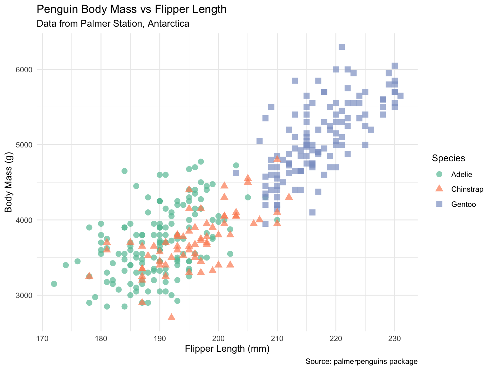
# Adding trend linesggplot(penguins, aes(x = flipper_length_mm, y = body_mass_g, color = species)) +geom_point(size =2, alpha =0.6) +geom_smooth(method ="lm", se =TRUE) +# Linear regression with confidence intervalscale_color_viridis_d() +facet_wrap(~island) +# Separate panels by islandlabs(title ="Penguin Morphology by Island",x ="Flipper Length (mm)",y ="Body Mass (g)" )
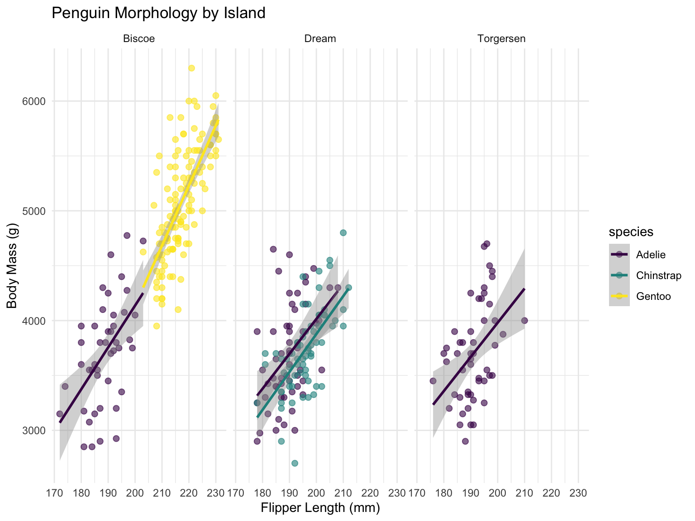
Bar Plots
# Count bar plotggplot(penguins, aes(x = species)) +geom_bar(fill ="steelblue") +labs(title ="Penguin Count by Species")
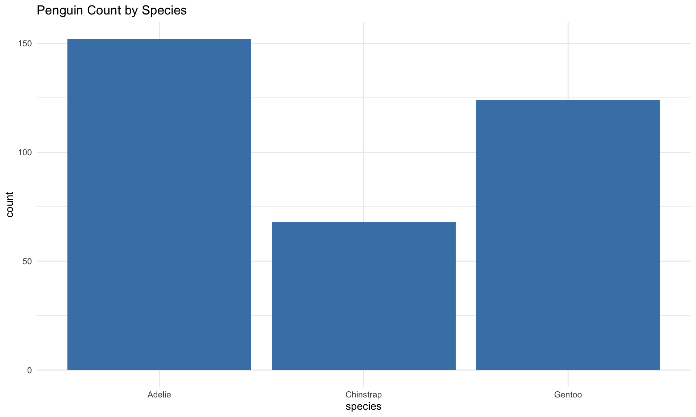
# Grouped bar plotpenguins %>%count(species, island) %>%ggplot(aes(x = species, y = n, fill = island)) +geom_col(position ="dodge") +scale_fill_brewer(palette ="Set3") +labs(title ="Penguin Distribution Across Islands",x ="Species",y ="Count",fill ="Island" ) +theme(legend.position ="top")
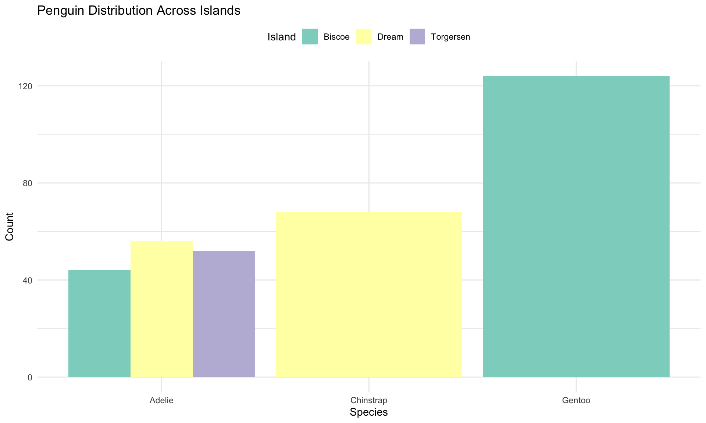
# Stacked percentage bar plotpenguins %>%count(species, sex) %>%drop_na() %>%group_by(species) %>%mutate(percentage = n /sum(n) *100) %>%ggplot(aes(x = species, y = percentage, fill = sex)) +geom_col() +scale_fill_manual(values =c("female"="#FF6B9D", "male"="#4ECDC4")) +labs(title ="Sex Distribution by Species",x ="Species",y ="Percentage",fill ="Sex" ) +geom_text(aes(label =round(percentage, 1)), position =position_stack(vjust =0.5),color ="white", fontface ="bold")
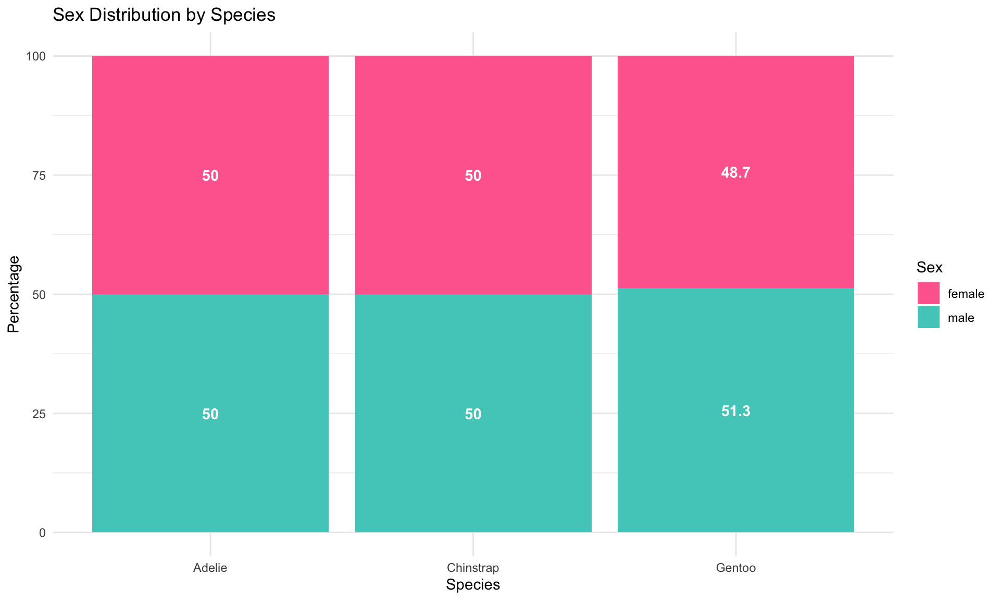
Histograms and Density Plots
# Basic histogramggplot(penguins, aes(x = body_mass_g)) +geom_histogram(bins =30, fill ="darkblue", alpha =0.7) +labs(title ="Distribution of Penguin Body Mass")
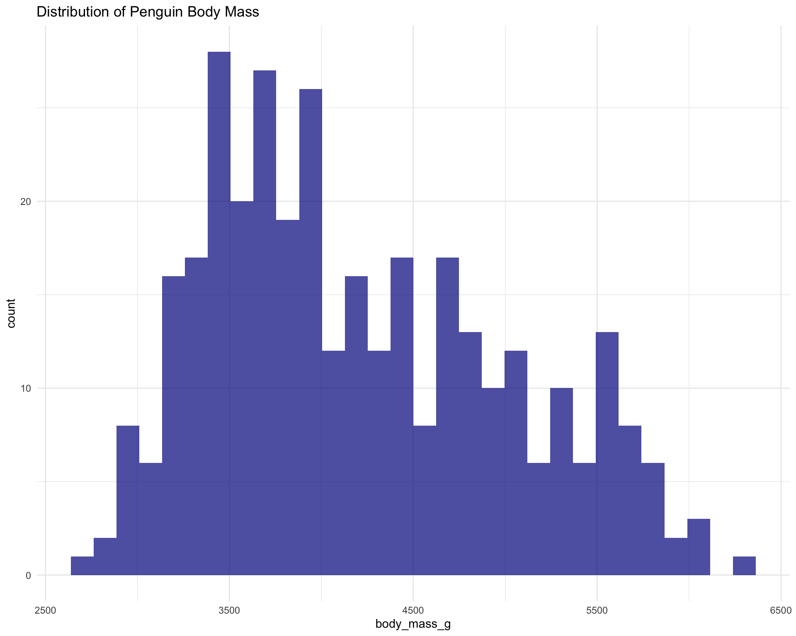
# Density plot with fillggplot(penguins, aes(x = body_mass_g, fill = species)) +geom_density(alpha =0.5) +scale_fill_viridis_d() +labs(title ="Body Mass Distribution by Species",x ="Body Mass (g)",y ="Density" )
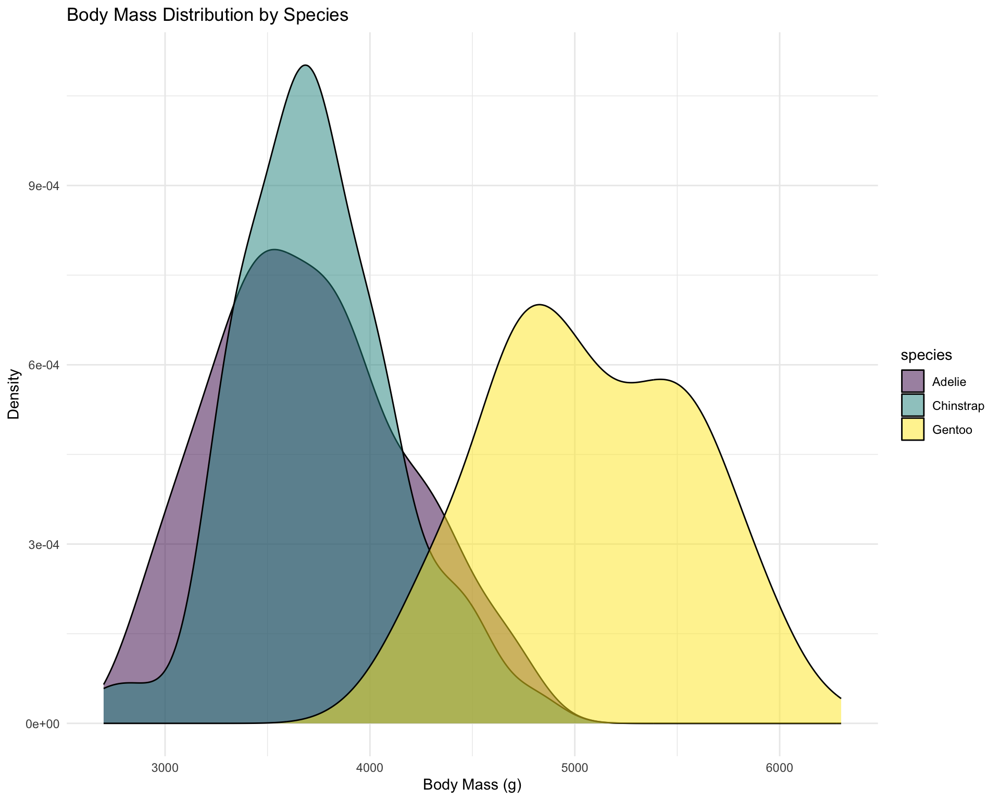
# Histogram with density overlayggplot(penguins, aes(x = flipper_length_mm)) +geom_histogram(aes(y =after_stat(density)), bins =30, fill ="lightblue", color ="black", alpha =0.7) +geom_density(color ="red", linewidth =1.2) +facet_wrap(~species, scales ="free_y") +labs(title ="Flipper Length Distribution by Species",x ="Flipper Length (mm)",y ="Density" )
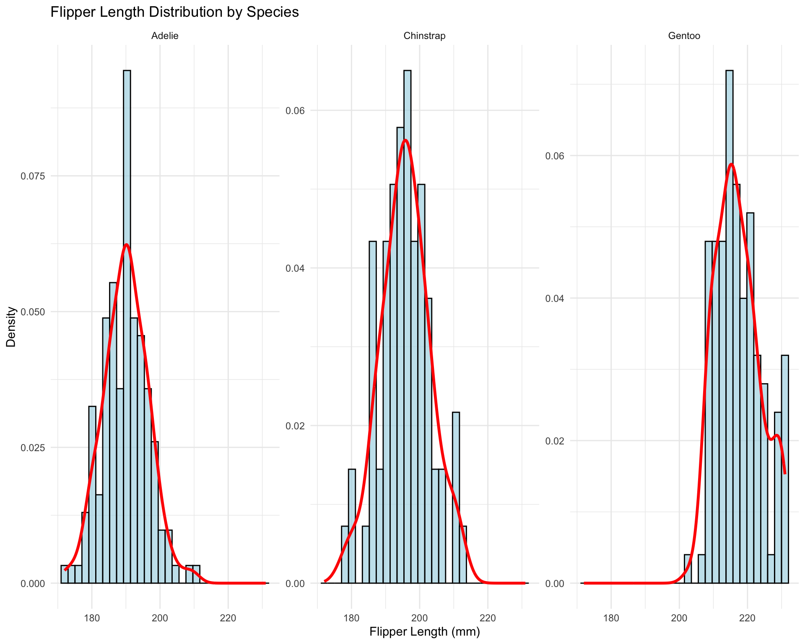
# Ridge plot (requires ggridges)if (require(ggridges, quietly =TRUE)) {ggplot(penguins, aes(x = body_mass_g, y = species, fill = species)) +geom_density_ridges(alpha =0.7, scale =1.5) +scale_fill_viridis_d() +labs(title ="Body Mass Distribution Ridge Plot",x ="Body Mass (g)",y ="Species" ) +theme_minimal() +theme(legend.position ="none")}
Box Plots and Violin Plots
# Basic box plotggplot(penguins, aes(x = species, y = bill_length_mm)) +geom_boxplot(fill ="lightgreen", alpha =0.7) +labs(title ="Bill Length by Species")
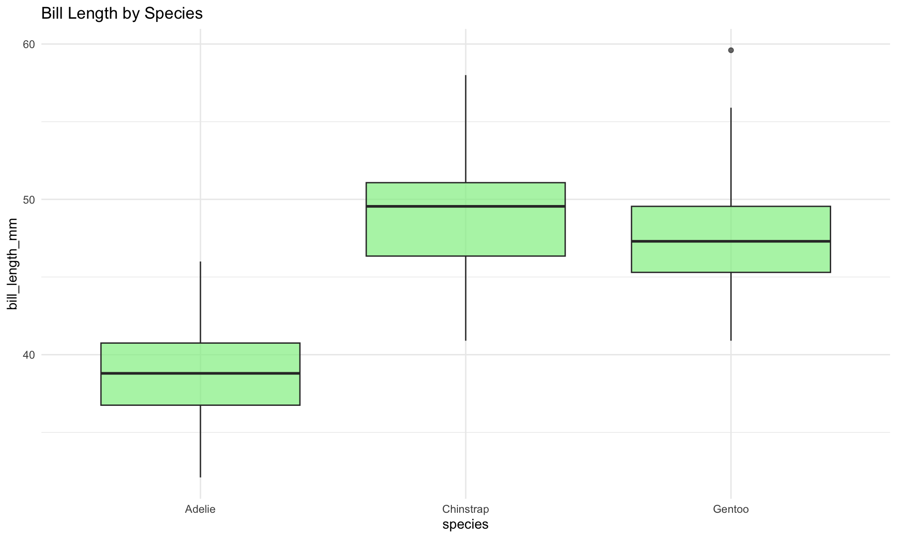
# Box plot with pointsggplot(penguins, aes(x = species, y = bill_length_mm, fill = species)) +geom_boxplot(alpha =0.5, outlier.shape =NA) +# Hide outliersgeom_jitter(width =0.2, alpha =0.3) +# Add jittered pointsscale_fill_brewer(palette ="Set2") +labs(title ="Bill Length Distribution with Individual Points",x ="Species",y ="Bill Length (mm)" ) +theme(legend.position ="none")
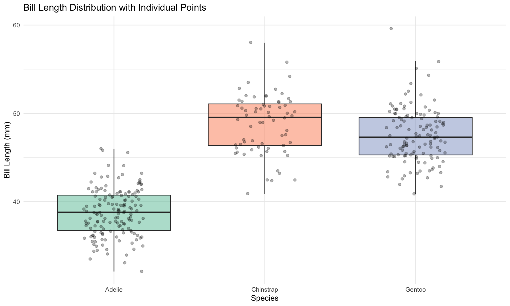
# Violin plot with box plot overlayggplot(penguins, aes(x = species, y = body_mass_g, fill = species)) +geom_violin(alpha =0.5) +geom_boxplot(width =0.2, alpha =0.7) +scale_fill_viridis_d() +labs(title ="Body Mass Distribution: Violin + Box Plot",x ="Species",y ="Body Mass (g)" ) +theme(legend.position ="none")
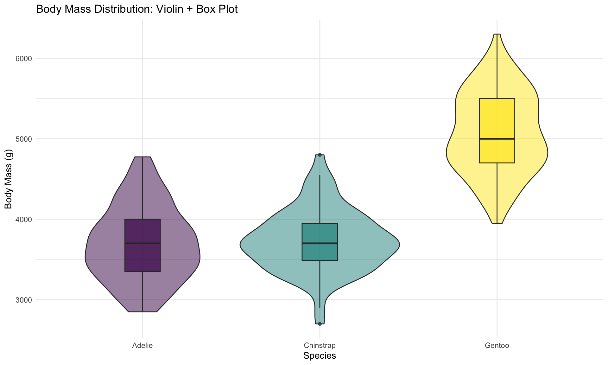
Line Plots and Time Series
# Time series with gapmindergapminder %>%filter(country %in%c("United States", "China", "India", "Brazil", "Germany")) %>%ggplot(aes(x = year, y = gdpPercap, color = country)) +geom_line(linewidth =1.2) +geom_point(size =2) +scale_y_log10(labels = scales::dollar) +scale_color_brewer(palette ="Set1") +labs(title ="GDP per Capita Over Time",subtitle ="Selected Countries (1952-2007)",x ="Year",y ="GDP per Capita (log scale)",color ="Country" ) +theme(legend.position ="top")
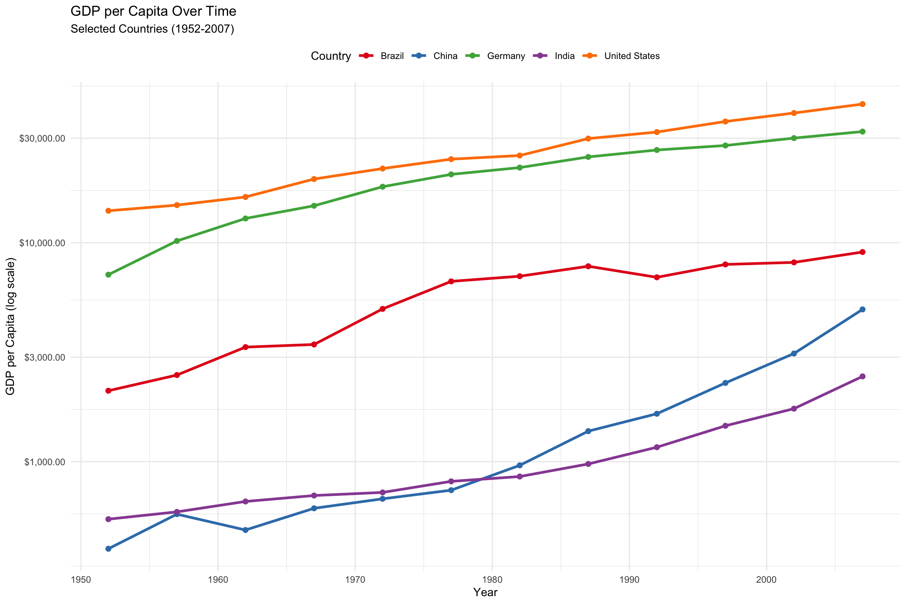
# Area plotgapminder %>%filter(continent =="Americas") %>%group_by(year) %>%summarise(total_pop =sum(pop) /1e9) %>%ggplot(aes(x = year, y = total_pop)) +geom_area(fill ="steelblue", alpha =0.7) +geom_line(color ="darkblue", linewidth =1) +labs(title ="Total Population of the Americas",x ="Year",y ="Population (billions)" )
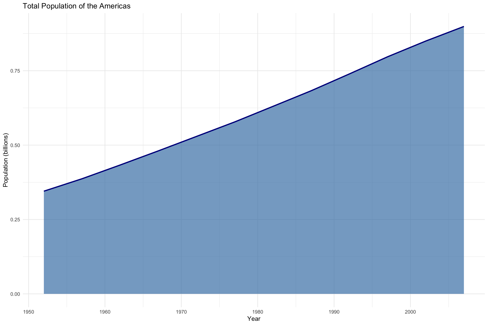
# Multiple lines with confidence intervalspenguins %>%drop_na() %>%group_by(species, year) %>%summarise(mean_mass =mean(body_mass_g),se_mass =sd(body_mass_g) /sqrt(n()),.groups ="drop" ) %>%ggplot(aes(x = year, y = mean_mass, color = species)) +geom_ribbon(aes(ymin = mean_mass - se_mass, ymax = mean_mass + se_mass, fill = species), alpha =0.2) +geom_line(linewidth =1.2) +geom_point(size =3) +scale_color_viridis_d() +scale_fill_viridis_d() +labs(title ="Average Penguin Body Mass by Year",subtitle ="With standard error bands",x ="Year",y ="Mean Body Mass (g)" )
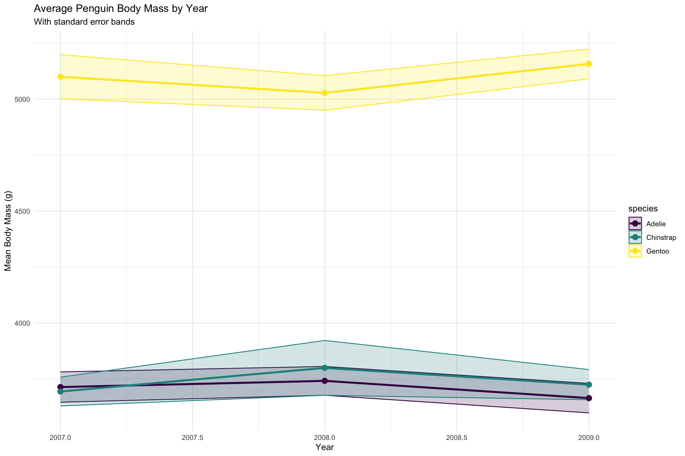
Advanced Aesthetics and Scales
# Custom color scalesp1 <-ggplot(penguins, aes(x = bill_length_mm, y = bill_depth_mm, color = body_mass_g)) +geom_point(size =3) +scale_color_gradient(low ="blue", high ="red") +labs(title ="Gradient Color Scale")p2 <-ggplot(penguins, aes(x = bill_length_mm, y = bill_depth_mm, color = body_mass_g)) +geom_point(size =3) +scale_color_viridis_c(option ="plasma") +labs(title ="Viridis Color Scale")p3 <-ggplot(penguins, aes(x = bill_length_mm, y = bill_depth_mm, color = species)) +geom_point(size =3) +scale_color_manual(values =c("#E69F00", "#56B4E9", "#009E73")) +labs(title ="Manual Color Scale")p4 <-ggplot(penguins, aes(x = bill_length_mm, y = bill_depth_mm, size = body_mass_g)) +geom_point(alpha =0.5, color ="darkblue") +scale_size_continuous(range =c(1, 10)) +labs(title ="Size Scale")# Combine plots with patchwork(p1 + p2) / (p3 + p4) +plot_annotation(title ="Different Scale Examples")